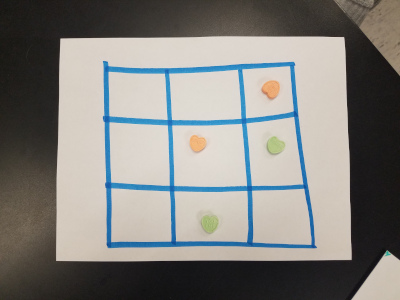

jedediyah.github.io/nctm2025
Mathematics for Machine Learning and Artifcial Intelligence
Jedediyah
Williams, PhD
NCTM Atlanta 2025
What is the math for AI and ML?
Discrete, Stats, and Computing
{kind=link}
Discrete, Stats, and Computing are not new!

Biggest proponent of Discrete math? NCTM!
Today
-
Activities
- Calculator Dynamics
- ML by Hand
- AI by Hand
- Feature Engineering
- Data Splitting
Activity 1 — Dynamical Systems and Feedback
Activity 1 — Dynamical Systems and Feedback
Activity 1 — Dynamical Systems and Feedback

Iterate
The orbit of \(x_0\) is the sequence generated by iterating
| \[S(x) = \sqrt{x}\] | \[\quad\] |
\(x_0 = 16\) \(x_1 = S^1(x_0)=4\) \(x_2 = S^2(x_0)=2\) \(x_3 = S^3(x_0)=1.4142...\) \(x_4 = S^4(x_0)=1.1892...\) \(\vdots\) \(x_n = S^n(x_0)= ...\) |
Activity 1 — Dynamical Systems and Feedback
Find the orbit of \(x_0=0.2\) in the following systems:
| \(S(x)=\sin(x)\) | \(C(x)=\cos(x)\) | \(F(x)=4x(1-x)\) |
|---|---|---|
| 0.2 | 0.2 | 0.2 |
| 0.1986693 | 0.9800665 | 0.64 |
| \(\vdots\) | \(\vdots\) | \(\vdots\) |
Activity 1 — Calculator Dynamics and Feedback
Chaos
A system is chaotic if it exhibits
sensitive dependence on initial conditions.
sensitive dependence on initial conditions.
\(x_0 = 8 \)
\(x_0 = 8.00001\)
\(x_0 = 8.00001\)

For Later: Watch Robert Devaney
Summary: Dynamical Systems and Feedback
- Feedback and recursion are fundamental concepts in AI/ML/DS.
- Even simple systems can exhibit sensitive dependence on initial conditions.
- Analyzing dynamical systems is a great application for spreadsheets!

Activity 2 — Machine Learning

In 1959, Arthur Samuel created a computer program to play checkers.
Activity 2 — Machine Learning
Hexapawn is a mini chess variant, popularized by Martin Gardner.
White moves first. A piece can either move forward if the space in front of it is empty, or capture an opponent’s piece diagonally.
A player wins when:
- One of their pawns reaches the other side
- They capture all of their opponent's pieces
- It is their opponent's turn and there is no legal move

Each position has a value, and each time a game ends, every position from that game gets +1 for player 1 win, or -1 for player 2 win

For Later: Watch Matt Parker
Summary: Hexapawn Machine Learning
- Analyzing games involves combinatorics, probability, modeling. It can involve experiments, data, statistics, graphing, etc.
- Understanding the mechanisms of machine learning remove some of the mysticism. AI isn't magic.
- Adversarial attacks on games develop conceptual understanding of bias, and demonstrate potential weaknesses of deployed ML projects.
Red Green Blue (RGB)

Closeup of LCD display
RGB
 An image on a screen is a composite
An image on a screen is a compositeof three color channels
A digital image is a grid of pixel values, typically with values from 0
(none of that color) to 255 (full color).
|
+ |
|
+ |
|
= |
|
||||||||||||||||||||||||||||||||||||||||||||||||||||||||||||||||
| Red | Green | Blue | Composite |
"Filters" are functions that take an image as input, operate on the pixel values, and output the new
image.

Warmer
⟶
⟶
Cooler
⟶
⟶
Blur
⟶
⟶
\(+\Delta RGB\)
⟶
⟶
Original RGB Histogram
Transformed RGB Histogram
RGB Filter:
0
255
0
255
0
255
|
|
|
0
255
0
255
0
255
|
A Classification Problem
We are given an image and want to classify it as "Apple", "Orange", "Banana", or "Blueberry"

|
⟶ |
Classifier
|
⟶ | "Apple" |
Feature Engineering a Fruit Classifier
Gather all of the "Apple" images. For each image, add up the total R values, G values, and B values.

Feature Engineering a Fruit Classifier
Gather all of the "Apple" images. For each image, add up the total R values, G values, and B values.
Feature Engineering a Fruit Classifier

Feature Engineering a Fruit Classifier
RGB sum = (2.15, 2.21, 1.8) Million ⟶ ?
Feature Engineering a Fruit Classifier
Given an input image, our Fruit Classifier Algorithm is:
- Add up all of the R, G, and B values
- If ... then ...
- Else if ... then ...
- Else if ... then ...
- Else ...
MNIST


What are the distinguishing features?


- If needed, visit this spreadsheet tutorial
- Start with this spreadsheet of 0 and 1 pixel data
- Familiarize with the data
- Write some formulas to get stats about the 0s and 1s
- Write a formula to predict if a given row is a 0 or 1
- After you have a reliable classifier (formula for predicting 0 or 1), then test it on this new data


Conclusions
We are just getting started!
We need to revitalize K-12 with:
- Discrete math
- Computing
- Exploratory mathematics
References
O'Neil, C., Schutt, R. (2013). Doing Data Science: Straight Talk from the Frontline. United States: O'Reilly Media.
Samuel, A.L. (1959). Some Studies in Machine Learning Using the Game of Checkers. IBM Journal of Research and Development, 44, 206-226.
Gardner, M. (1962, March). How to build a game-learning machine and then teach it to play and to win. Scientific American, 206(3), 138-153.
Williams, J. (2024). Building a Digit Classifier with MNIST. Mathematics Teacher: Learning and Teaching PK-12, 117(2), 129-137.
Resources: https://jedediyah.github.io/data/mnist/
Williams, J. (2025). Computing and Data Sciences. URL: https://williams-bhs.github.io/.
Williams, J. (2025). Spreadsheet Tutorial. URL: https://williams-bhs.github.io/spreadsheets/
Abeba Birhane. (2021). The Impossibility of Automating Ambiguity. Artif Life, 27 (1): 44-61. URL: https://direct.mit.edu/artl/article-abstract/27/1/44/101872/The-Impossibility-of-Automating-Ambiguity?redirectedFrom=fulltext
Hart, Eric & Martin, W Gary. (2018). Discrete Mathematics Is Essential Mathematics in a 21st Century School Curriculum. 10.1007/978-3-319-70308-4_1.
Hart, E.W., Martin, W.G. (2018). Discrete Mathematics Is Essential Mathematics in a 21st Century School Curriculum. In: Hart, E., Sandefur, J. (eds) Teaching and Learning Discrete Mathematics Worldwide: Curriculum and Research. ICME-13 Monographs. Springer, Cham. https://doi.org/10.1007/978-3-319-70308-4_1
DeBellis, V.A., Rosenstein, J.G. Discrete mathematics in primary and secondary schools in the United States. Zentralblatt für Didaktik der Mathematik 36, 46–55 (2004). https://doi.org/10.1007/